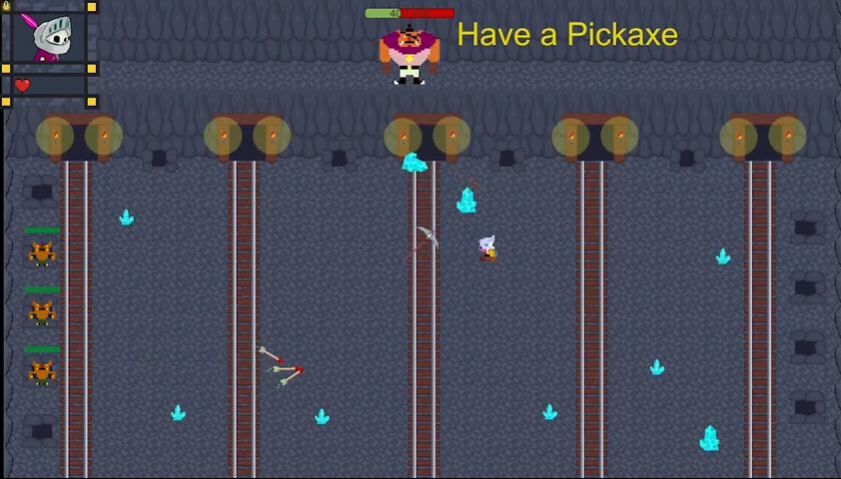
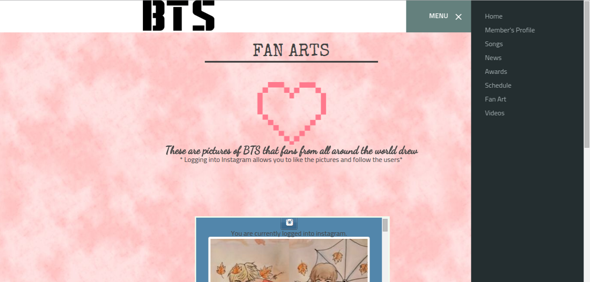

Skelly's Uprising is an interactive dialogue based top-down game made in Unity by Team Working Title. This game consists of one boss and 10 completely different gameplays depending on the player's dialogue choices. Choose different dialogue paths to experience varying levels of difficulty. Change the fight and how the boss attacks through dialogue. Every choice matters.

Contributions as a Programmer, Narrator and Sound Producer:
Executed daily meetings, weekly playtests, & monthly presentations over the course of 9 months totaling to 405+ hours.
Pushed, pulled & merged over 162+MB of data and builds between 7 team members using 100+ branches on Github.
Created 6 different original soundtracks for different game scenes including Menu, Settings, Dialogue, and Fight scene.
Programmed game object collisions, player & enemy attacks, sprite animations, narratives/dialogues and in-game UIs including health bars, volume buttons, mouse detection and other responsive designs in Unity using C# for 270+ hours.
Musical City is an interactive and generative game made with Unity. This game allows the player to make music/beats by lighting up buildings. Each building controls a different instrument/melody. The player can then pick what instruments/melodies they want to add on top of their beats.
Contributions as a Programmer:
Administered weekly meetings, and playtests to inspect for any bugs, glitches, and UIs thats could be improved or fixed.
Promoted and presented our game in lecture to TAs, students, and professors for constructive criticism and feedback.
Implemented functions for autotiling, scripts for coordinate placements on grids using 2D arrays in Unity for 10+ hours.
Betty;s Great Escape is an infinite runner game which means that if you keep playing, it will never end. However, if you get hit by lazers, you can lose. Betty's Great Escape was created as a midterm project for my game design experience class. My partner and I used Phaser to make this game. The game engine we use to make this game was Phaser.
Contributions as a Programmer:
Implemented the timer display, score display, power ups, and coin spawns using Phaser.
Set up physics, collisions, charcter controls, sound effects, and background music in the game.
Found all creative common licensed assets for the game including sound effects, music, charcter sprite sheets, and more.
Project Ezekiel was created as a final project for my game design experience class. My partner and I used Phaser to make this game.
Contributions as a Programmer:
Programmed four different types of enemies with multiple enemy behaviors using AI for a more challenging experience.
Implemented the health bar, score display, lazer attacks, spawning time as well as physics and collisions in the game.
Created the boss stage as well as finding all the creative common licensed assets needed for the game to look cohesive.
Pass The Boba
Visual Communication and Interaction Design
Pass The Boba
~Fall 2019~
Pass the Boba is a table top card game inspired by Exploding Kittens and SushiGo. The game's objective is to get as much boba points as possible.
However, along the way, some players might realize that they are lactose, in which case they will have to try to lose those boba points. This game will
cause players to sabotogze each other to the point where friendships might end. This was my very first card game that I worked on for my Visual Communication
and Interaction Design class. The Professor urged us to try and make a card game all by ourselves so this project was quite stressful since I had to work alone
and was not experienced in the drawing aspect. However, after finally finishing this game, I've come to really love my work. My goal when making
this game is to make it easy to play but hard to master.
Contributions as a Game Designer, Developer, and Artist:
Drew the art for all the different types of card in the game.
Designed the gameplay, game mechanics, game dynamics and game aesthetics for Pass the Boba.
Wrote and designed the entire instruction manual for the game
Spent 60+ hours playtesting and creatibg prototypes to test game play and game mechanics
Game Jam is a contest where participants try to make a video game from scratch. Depending on the format, participants might work independently, or in teams. The contest duration usually ranges from 24 to 72 hours. Participants are generally programmers, game designers, artists, writers, and others in game development-related fields.
Contributions as a Programmer:
Collaborated in an RPG game called Eden’s Nightmare using game development platforms such a Unity.
Programmed the keyboard to character coordinations for the animated sprites in Eden’s Nightmare using C/C++.
Oversaw that Eden’s Nightmare had no errors or glitches when played by playtesting the game for 10+ hours.
Code510 is a summer internship where they teach you about web development. We got hands on experience by making websites of our own. We learned how implement social media log ins into our websites by using APIs and Json. We also learned how to setup websites with HTML and customizing them using CSS and Javascript.

Contributions:
Created an integrated fan page website for the band, BTS, which showed live, up-to-date information about their tours.
Contributed to an RPG game called Elders Tale by programming a scoreboard and ensuring that the scoreboard works.
Built and customized portfolio with creative style to reflect individuality that contains all previous work and projects.